Küchenarbeitsplatten aus Keramik
Bei NEOLITH handelt es sich um die größte Hightech-Keramik-Platte weltweit.
Besonders in Küche, Bad und Wohnraum geht der Trend immer mehr hin zu großformatigen Fliesen, was NEOLITH so beliebt bei unseren Kunden aus dem Raum Stuttgart macht.
Hergestellt wird die Keramik aus natürlichen, sorgfältig ausgewählten Rohstoffen, wie zum Beispiel Quarzsand, Mineralien, Feldspat oder Tonerde.
Besonders beliebt sind die Keramik-Platten auch aufgrund ihrer außergewöhnlich dünnen Plattenstärke von 3, 5 oder 12 mm. Vor allem bei Küchenarbeitsplatten erleichtert dies den Transport, die Handhabung und Lagerung.

Neolith ist 100 % Natur.
Nachhaltig und umweltfreundlich, besteht vollständig aus natürlicher Tonerde, Feldspat, Quarzsand und Mineraloxiden.
Unter wesentlich höherem Druck hergestellt als herkömmliche Keramik, erfüllt Neolith alle in Europa geltenden Umweltschutzstandards.
Auch Entwicklung und Herstellung erfolgen unter Berücksichtigung von Nachhaltigkeitskriterien und leisten einen wertvollen Beitrag für Umwelt und Gesellschaft.
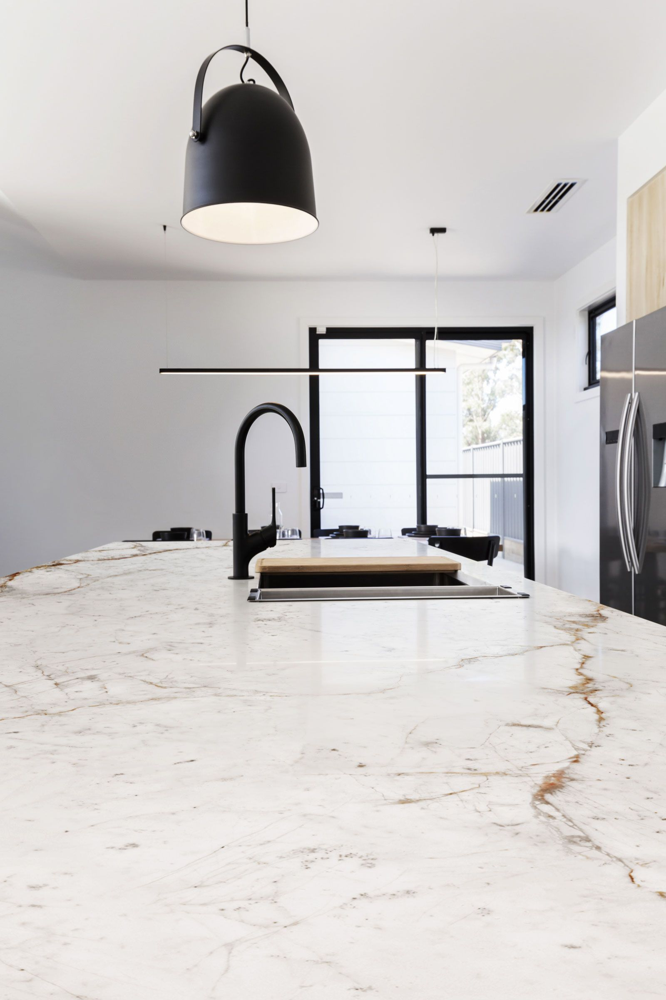
Beständige, hygienische Küchenarbeitsplatten kaufen
NEOLITH ist für die unterschiedlichsten Anwendungen im Innen- und Außenbereich geeignet. Dazu zählen unter anderem Wandverkleidungen, Fußböden, Fassaden und Küchenarbeitsplatten, die wir Ihnen in Altbach bei Stuttgart anbieten.
Die Porzellan-Keramik, aus der die Küchenarbeitsplatten hergestellt sind, ist absolut lebensmittelecht, d. h. Bakterien und Verfettungen können nicht in die Oberfläche eindringen. Zudem ist das Material hygienisch, temperaturbeständig, leicht zu reinigen und setzt keine Schadstoffe frei. Ob als Küchenarbeitsplatte, als Nischenrückwand oder Waschtisch – die NEOLITH Keramik-Platten überzeugen durch absolute Kratz-, Hitze- und UV-Beständigkeit und sind damit der perfekte Partner auch bei stärkeren Beanspruchungen.
Ebenso wie die Küchenarbeitsplatten von Lightstone erfüllen auch die NEOLITH Arbeitsplatten modernste sicherheitstechnische Anforderungen. Lassen Sie sich ausführlich in unseren Ausstellungsräumen in der Nähe von Stuttgart beraten! Bei weiteren Fragen stehen wir Ihnen natürlich auch telefonisch oder per E-Mail zur Verfügung.


Farbmuster
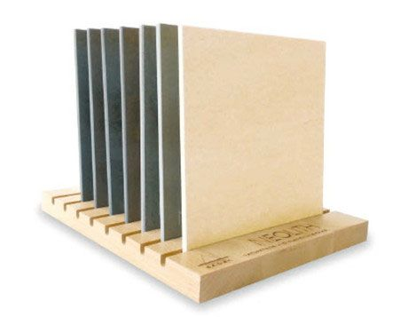
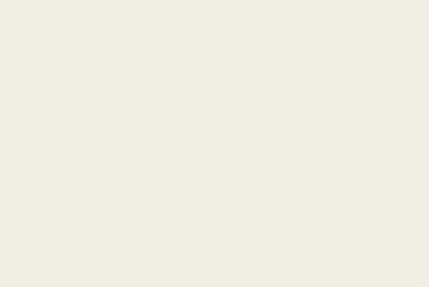
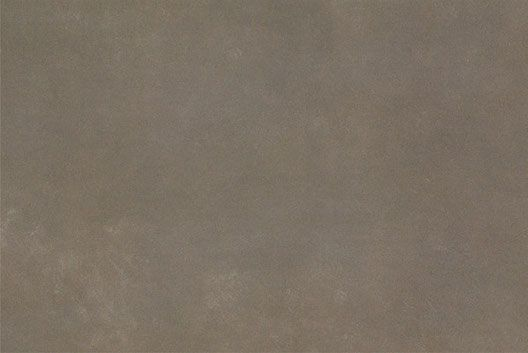
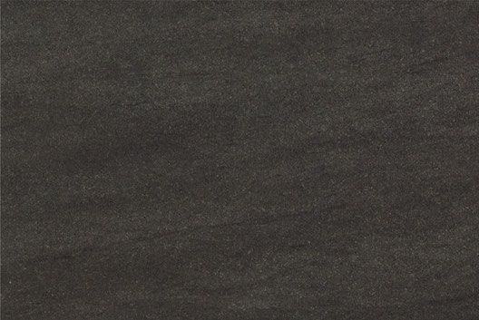
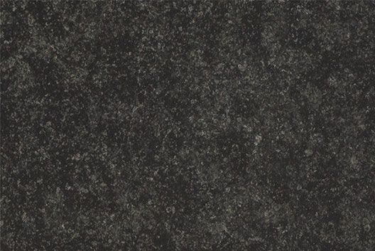
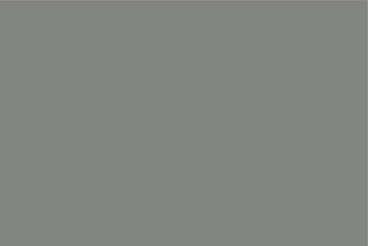
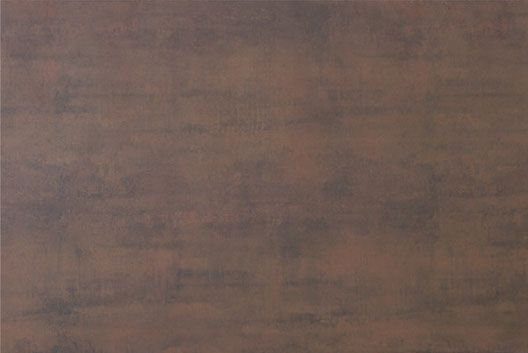
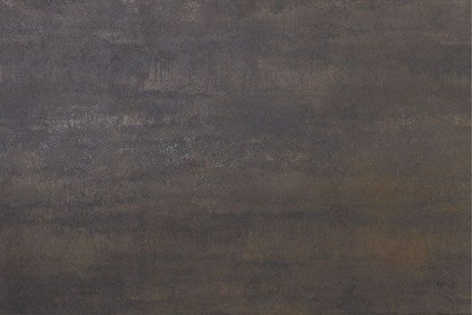
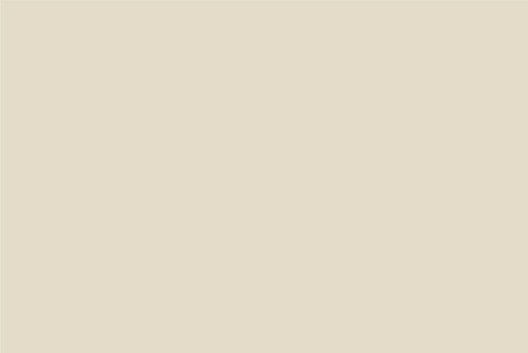
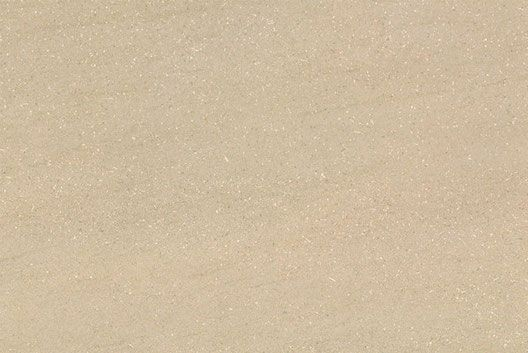
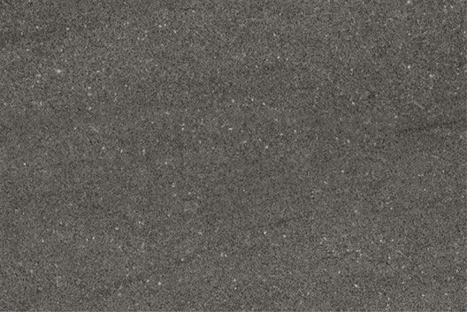
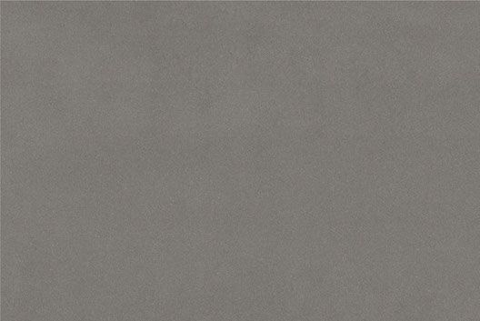
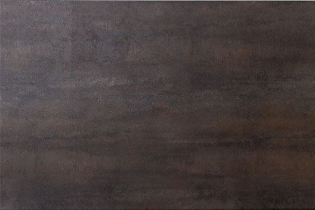
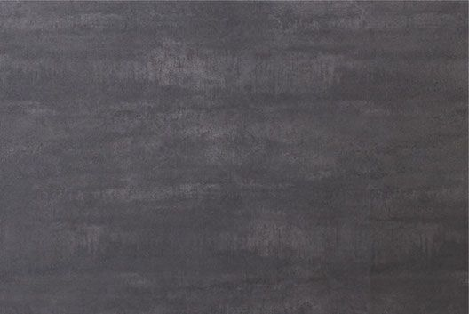
Neolith ist …
… leicht.
Die Stärke der keramischen Platten erleichtert den Transport und die Handhabung und reduziert gleichzeitig den Belastungsfaktor des Unterbaus.
… wasserundurchlässig.
Neolith ist mit seinem Absorptionsgrad von nahezu Null undurchlässig für Wasser und unempfindlich gegen Flüssigkeiten.
… einfach zu reinigen.
Widerstandsfähigkeit gegen alle chemischen Reinigungsmittel, wie Bleiche oder Ammoniak.
… hygienisch.
Es setzt keine Schadstoffe frei und ist geeignet für den Kontakt mit Lebensmitteln.
… temperaturbeständig.
Es verbrennt nicht beim Kontakt mit Feuer und setzt weder Rauch noch Giftstoffe frei, wenn es hohen Temperaturen ausgesetzt wird.
… verschleißbeständig und abriebfest.
Seine harte Oberfläche macht Neolith kratzfest und abriebfest.
… biegesteif.
Es ist somit widerstandsfähig gegen hohe Belastungen und Drücke.
… umweltfreundlich.
Da es vollständig aus natürlichen Materialien besteht, setzt es keine umweltschädlichen Substanzen frei und ist vollständig recyclingfähig.
Tafelgrößen
- 6+ mmDas Tafelmaß der Rohtafeln aus Keramik bei 6+ mm Materialstärke beträgt 320 x 150 cm.
- 12 mmDas Tafelmaß der Rohtafeln aus Keramik bei 12 mm Materialstärke beträgt 320 x 150 cm.
- OberflächeKeramik-Oberflächen sind rau.
Sicherheitszertifikate
Wie auch Lightstone erfüllt Neolith Keramik heute schon die modernsten und sicherheitsrelevantesten Anforderungen und hat dadurch folgende Zertifikate:
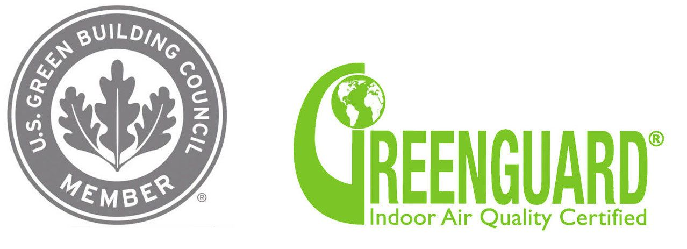
Kantenprofile, Ausschnitte & Sonstiges
Kantenprofile
- Profil 5: Oberseite und Unterseite mit Fasen 3 mm und Unterseite 50 mm Tiefe geschliffen.
- Profil 6: Oberseite und Unterseite mit Rundung 3 mm und Unterseite 50 mm Tiefe geschliffen.
- Profil 5: Oberseite und Unterseite mit Fasen 3 mm.
- Profil 9: Schürzenprofil auf Gehrung verklebt, oben und unten gefast oder gerundet.
Mögliche Ausschnitte
- Viereck gesägt für Auflageteile; Viereck flächenbündige Teile; Viereck für Unterbauteile (nur 12 mm)
- Softeck gesägt für Auflageteile; Softeck flächenbündige Teile; Softeck für Unterbauteile
- Rund gesägt für Auflageteile; Rund flächenbündige Teile; Rund für Unterbauteile
- Eckspülenausschnitt gesägt für Aufbauteile; Eckspülenausschnitt für flächenbündige Teile
- Ovalausschnitt gesägt für Auflageteile; Ovalausschnitt für Unterbauteile (nur 12 mm)
- Ablaufrillen ca. 400 x 10 mm
- Stärke 3+3 mm nur in Verbindung mit Profil 9 (wegen Klebefuge)
Sonstiges
Wandabschlussprofile in einer Höhe von 50 bis 100 mm
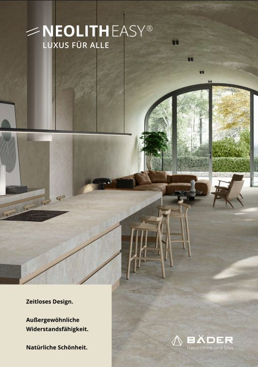
Unsere neue Endkundenbroschüre für Sie
Neolith Easy 2026 – alle Dekore und Informationen auf einen Blick.
PDFNeolith Easy 2026Endkundenbroschüre · PDF · 3,3 MBLassen Sie sich beraten
Besuchen Sie unsere Ausstellung in Altbach oder rufen Sie uns an – wir beraten Sie gerne persönlich.